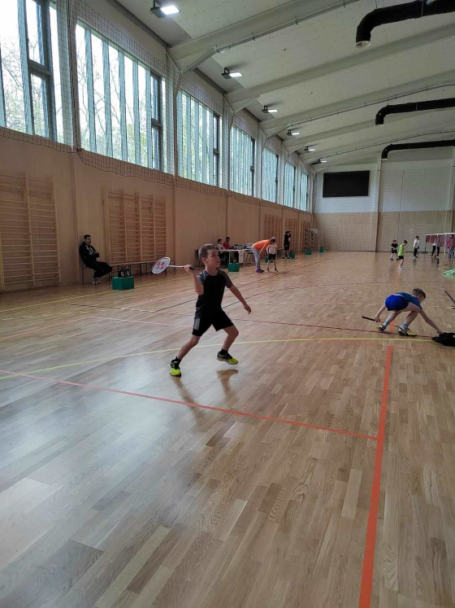
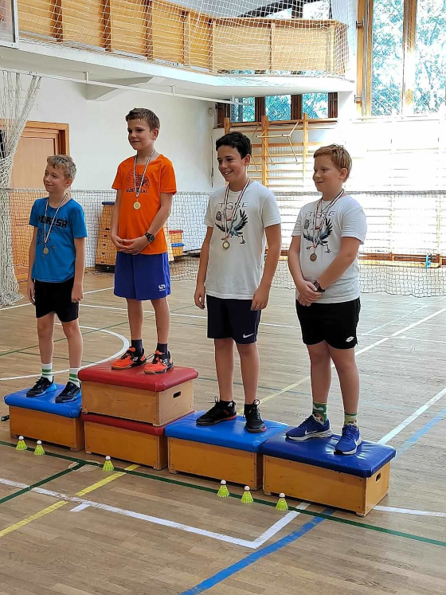
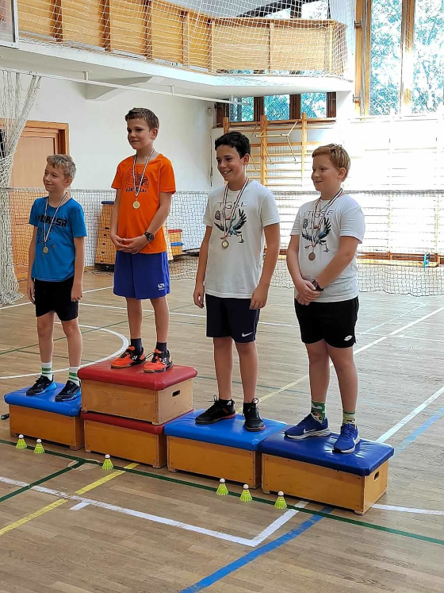

Üdvözöljük!
Ez a Tollasgólyák Tollaslabda Egyesület hivatalos weblapja.
Reméljük Ön is úgy leli örömét a sportágunkban mint ahogyan mi.
Mobil kompatibilis weblaphoz katt ide
Rólunk
Egyesületünk Veresegyházon 2021-ben alakult, két fő célkitűzésünk van:
- az egyik a versenysport támogatása.
- a másik a szabadidő sport népszerűsítése.
Kiemelkedően fontosnak tartjuk az utánpótlás kinevelését, így az általános és középiskolás korosztály számára egészséges, szórakoztató időtöltés alternatíváját nyújtjuk - a tehetségesek számára pedig a versenyzés, sikerélmény, fejlődés lehetőségét.
Nálunk
A tollaslabdával most ismerkedő 6 éves kezdő gyerekektől egészen a versenyzői szintig (alsós, felsős, gimnazista) vannak játékosaink.
Mellettük vannak az amatőr játékkedvelők, akik a szabadidejükben űzik ezt a szép sportágat.
Kinek ajánljuk?
Várjuk mindazon diákok vagy felnőttek jelentkezését, akik rendszeresen, vagy alkalomszerűen hódolnának e nagyszerű sportnak!
A fiatalabb korosztály tematikusan felépített edzések során sajátíthatja el a tollaslabda sport technikáját, részt vehet korosztályos versenyeken, edzőtáborban.
Az edzések számát igyekszünk az igényekhez igazítani, ugyanakkor, a tornatermi kapacitás korlátokat szab a létszámnak, így javasoljuk a mielőbbi jelentkezést a Kapcsolat menüpontnál.
Miért ajánljuk?
A tollaslabdát életkortól és nemtől függetlenül mindenki űzheti.
A sportág előnye, hogy - sportolásra alkalmas termen kívül - eszközigénye nem jelentős, ugyanakkor rendkívül jól átmozgat, nem durva sport, kevés gyakorlás után is egészséges testmozgást, jó szórakozást és sikerélményt jelent.
Az olimpiai rangra emelkedett versenysport viszont rendszeres és sok edzésmunkát, nagy ügyességet, kitűnő reflexeket, kiváló állóképességet követel, melyeket edzéseinken elsajátíthatsz.
Csapat
A versenysport területén I. és III. osztályú versenyekre járunk, ahol folyamatosan szép eredményeket érünk el.
A gyerekek és fiatalok másik nagy kedvence az évenként megrendezésre kerülő Diákolimpia, ahol minden évben sikerült tanítványainknak kijutnia az Országos Döntőre.
Az egyesület tollaslabda szakosztályának vezetői Reisz Aletta és Reisz Ágnes
Árak
| Havi tagdíj | ||
|---|---|---|
| Csoport | Heti 1x | Heti 2x |
| Kezdő | 16.000 Ft | 22.000 Ft |
| Haladó/Ifi | 16.000 Ft | 22.000 Ft |
Időpontok edzéseinkre
| Időpontok | ||||
|---|---|---|---|---|
| Csoport | Kedd(Mézesvölgyi Isk) | Kedd(Refi) | Csütörtök(Mézesvölgyi Isk) | Csütörtök(Refi) |
| Kezdő | 16:00-17:00 | 15:30-16:30 | ||
| Haladó/Haladó versenyző | 17:30-18:30 | 16:00-17:00 | ||
| Ifi/Ifi versenyző | 18:30-19:30 | 17:30-18:30 | ||
Képek
 

Kapcsolat
Email: tollasgolyak@gmail.com
Telefon: 06703782688
Facebook: TGSEtollaslabda
IDK